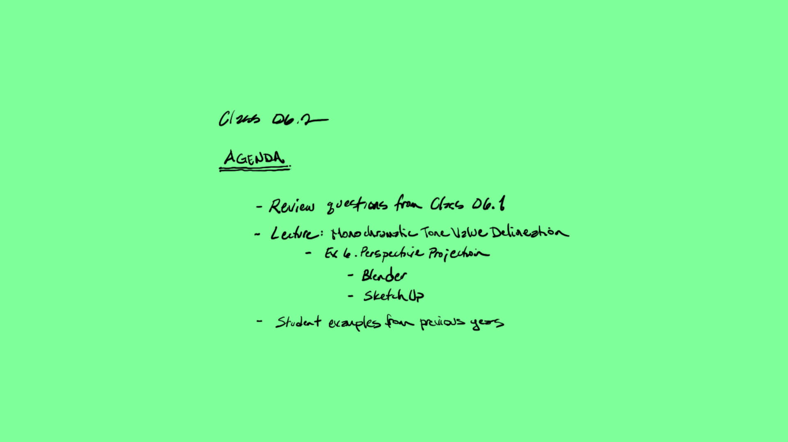
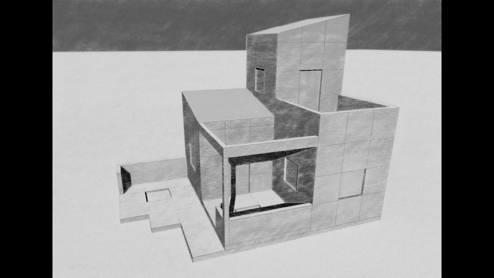
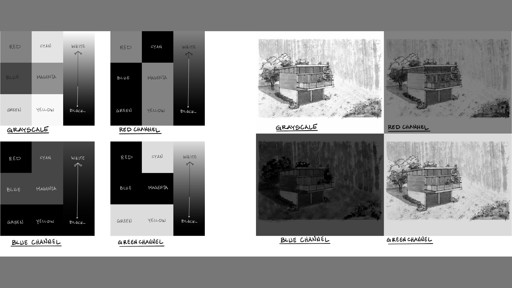
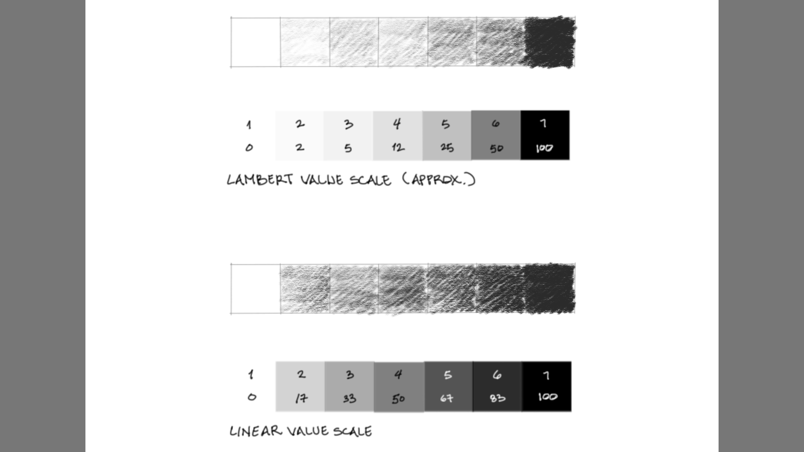
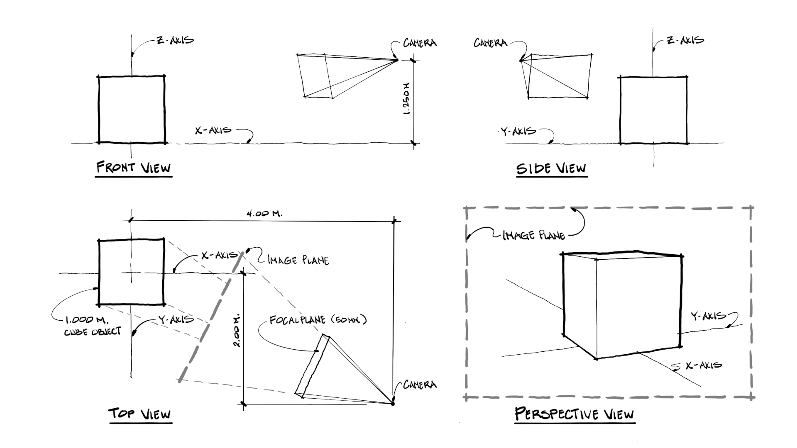
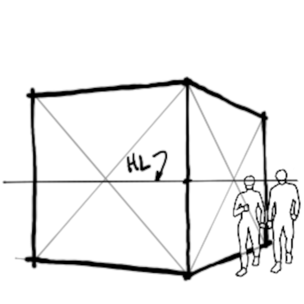
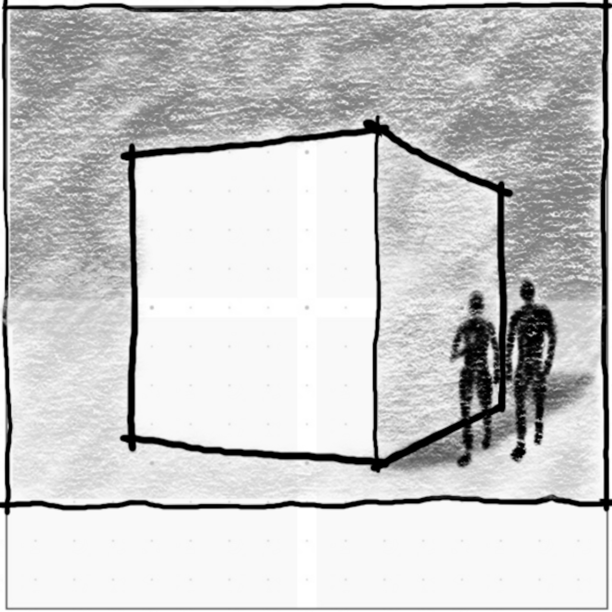
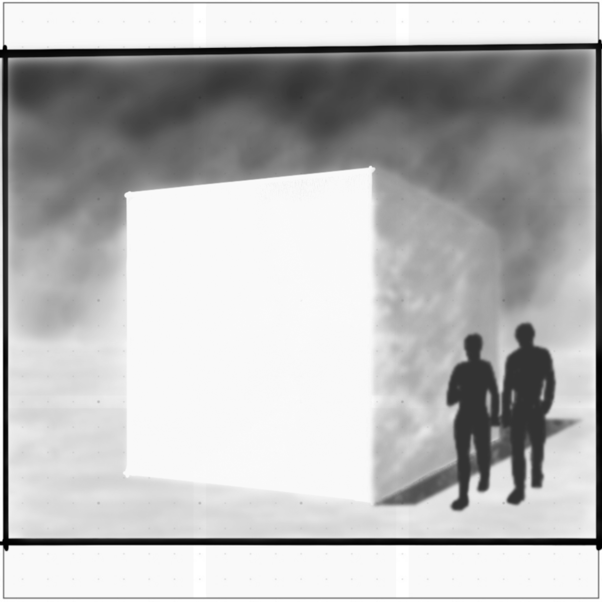

Today’s Agenda: Agenda 06-2
Frequently Asked Questions: FAQ

Exercise Six. Perspective Projection and
Tone Value Render of a Small Guest House

Fig. 4.2

Fig. 4.3

Fig. 4.4

Fig. 4.5

Fig. 4.6

Fig. 4.7
Exercise Six Examples